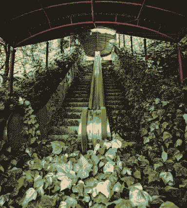
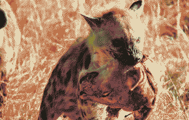
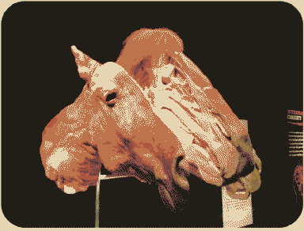
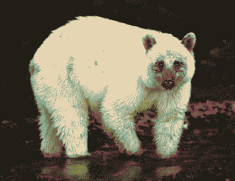
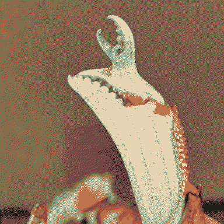

this forgotten petting zoo; it’s no longer built for you.
A zoo full of replicas and recordings of lost Earth species. Broken loops of bird song, animatronics recollecting ecologies, taxidermy talent shows. Megafauna clones wander all over the planet, from horrifying failures of rewilding experiments. There’s a big baobab thriving in the centre of the facility, probably.
   
(That replacement of the word extinct with lost was a really gut-punch, thanks me. Implying ownership and responsibility of these species, perhaps - thinking naïvely that ecologies can be reinvented around humanity.)
We filled these idols up with so many wishes, but we couldn’t remember the originals well enough, and now they have other things to wish for. The puppets and clones and robots taxidermy are all commingling, converging into some inbetween form.
Ailing am I, in cage of twisty wire, cold concrete. MOURNE Ache YEARN
Known you not that my heart is a forest - run with me through trees of striply bark, run with me over creeks of flickering fish,
run with me where the snow falls slow.
from The Dream of the Thylacine by Margaret Wild and Ron Brooks
Rain encounters a sad old unicorn and her wind-up birdfriend, following their songs to this facility.
the primates have taken to ripping their faces off:
That body belongs to someone else. It wears a mask. Just a mask. Take the mask off. Reach down and touch it. Good. Now take it off. Pull harder! This imposter is clever. The mask is affixed. You must cut it free. Take this blade. Do not hesitate. Do not poke! Chop it. Smash it! Yes… good. More. More. Wet your hands in this impostor’s gore. Spread it about. Good! There… you have it now. You have removed the mask… Does that look like your body now? No. It is an empty thing. I will take this mask and clean it. When others wear it, you will not see your face in it. You will know it is a mask.
from Mask of Bakris
Chimera
A Gigantopithicus with a giant alligator in place a tail, a crustacean instead of one hand. Its rotten skin has been patched up with reanimated leather jackets - a tail made of snakeskin boots. Huge knots of red hair falling off of an ossified armature. A pride of pale lionesses suckling at its sickly teats.

Maybe she is the Menagerie? yearning to join into some thing that makes a new kind of sense for these imitation ecologies.